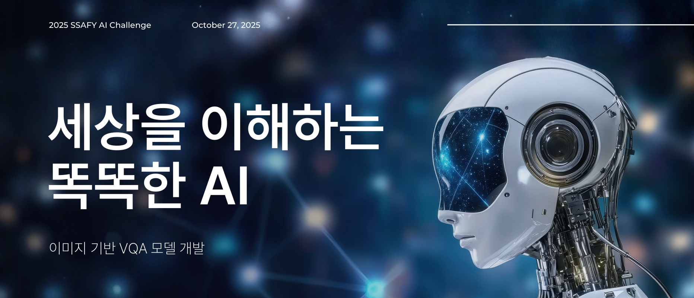
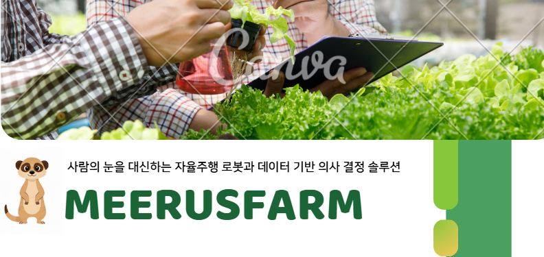
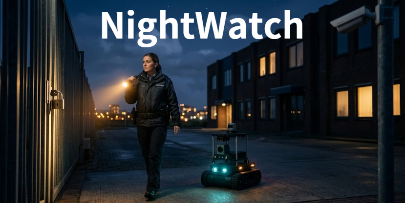

Multimodal AI
이미지 기반 VQA 멀티모달 AI 모델
2025.10
자원 제약 환경에서 Qwen3-VL 기반 대규모 모델을 4-bit 양자화하고, LoRA 파인튜닝과 선지 셔플 전략으로 추론 효율과 정확도를 함께 개선했습니다.
기술적 통찰력과 데이터 분석 역량을 바탕으로, 고객의 요구를 최적의 비즈니스 가치로 변환합니다. 단순한 라이브러리 사용에 그치지 않고, 제한된 인프라에서도 최적의 성능을 발휘하는 실전형 솔루션을 구축합니다.
PROFILE & STRENGTHS
AI 모델 최적화, 데이터 기반 문제 해결, 협업 커뮤니케이션 중심의 성장 경험.
비전공 Python 반. 1학기: Python 기초, 알고리즘, 웹 개발(Django, HTML/CSS, JavaScript, Vue) 중심 기본 교육. 2학기: 팀 프로젝트 기반 심화 과정 및 포트폴리오 고도화.
항공전자정보공학부 전공. H/W-S/W 통합 구조 이해. 시스템 관점의 문제 분석 경험.
ADsP 취득. OPIc IH 등급. 전기기사 필기 합격.
Pandas/NumPy 기반 데이터 분석. 4-bit Quantization, LoRA, TensorRT 기반 추론 최적화. 제한된 자원 환경에서의 성능 개선 경험.
영어학원 강사 3년. 학습자 눈높이에 맞춘 설명 역량. 복잡한 AI 모델의 실패 사례와 성능 지표를 비기술 직군도 이해할 수 있는 실행 계획으로 변환.
Python 자동화. RAG 기반 업무 흐름 설계. AWS 환경 관리. 모델과 서비스의 실제 운영 환경 연결 경험.
기술 스택 및 도구
FEATURED PROJECTS
각 프로젝트에서 마주한 문제, 해결 방식, 담당 역할을 중심으로 정리했습니다.

2025.10
자원 제약 환경에서 Qwen3-VL 기반 대규모 모델을 4-bit 양자화하고, LoRA 파인튜닝과 선지 셔플 전략으로 추론 효율과 정확도를 함께 개선했습니다.

2026.01 ~ 02
Edge-Cloud 하이브리드 아키텍처를 기반으로 병해를 실시간 탐지하고, 센서 데이터와 농업 지식 베이스를 결합해 RAG 리포트를 자동 생성했습니다.

2026.03 ~ 04
ROS2 기반 자율주행 로봇이 야간 순찰을 수행하며 이상상황을 탐지하고, GPT-4o 기반 관제 리포트와 알림을 자동화했습니다.